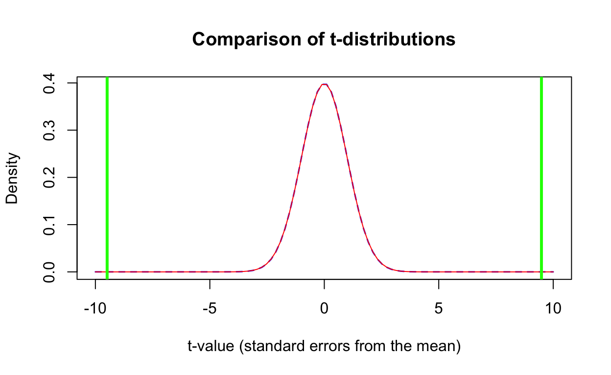

Introduction
In the last session, we discussed how to import data into R and do some preliminary checks prior to analysis.
Now we are ready for analysis.
We will learn how to:
- visualise the relationship between a categorical and continuous variable using boxplots and histograms
- conduct t-tests of significance for these relationships
- Interpret the results of such tests.
This session, we will focus on continuing to take baby steps with R and revise and develop some of the concepts from the last tutorial.
As a little bit of revision for last week, here’s a quick multi-choice question about checks before analysis of epidemiological data.
A little revision
- Attempt the following question…
The cot-death case-control study
Cot death was an important problem in the 1980s and New Zealand experienced an epidemic of the disease. There was a competition between the lab scientists and epidemiologists over who would be able to come up with an answer to respond to the epidemic.
The critical elements of a case-control study are the definition of cases and controls (the disease), and the potential exposures.
Here, cases were mothers of babies who had a child that died from unexplained causes in the first year of life, whereas controls were mothers of children less than one year old who were in normal health.
Some of the possible causes or exposures were:
- sleeping position of the baby on the night before death, or randomly chosen for controls (front vs. back or side)
- bed-sharing with parents (yes or no)
- mother smoked cigarettes (yes or no)
Loading libraries
The main library that will help us achieve our goals today will be:
lattice # plots!
epitools # calculating odds ratios & risk ratios!
arsenal # making nice tables!which is useful for making some plots.
To install and load libraries in R, please complete the following exercise, to install and load the lattice package.
Note: all the other libraries are loaded, but in the real world, if we were using all three libraries, we would need to load all three in the same manner.
if (!require()) install.packages()
library()if (!require(lattice)) install.packages("lattice")
library(lattice)Hint: You need to include quotes ("") around and lattice, for install.packages(), but not for require or library - they don’t need quotes.
The data is already loaded into this webpage, and checked its quality, so since we’ve covered that last session, we won’t do it now, but here’s a link just in case you’ve forgotten. Remember, we called the spreadsheet (in R data.frame) “df” short for “data.frame”.
Does birth weight influence cot-death?
We want to know whether (or not) birth weight is likely to influence risk of cot-death.
If birth weight has an influence, then we expect to see a difference in the mean birth weight between the cases and controls.
If there is no influence, we expect the means in the two groups to be very similar.
How do we know how different the means must be to not just be due to chance?
First step: visualise
To do this we compare the means of the birth weights between the cases and the controls. Let’s first examine the distribution of birth weight using the trusty histogram.
Histograms
Note: here, we are using the histogram() function from the lattice package.
The lattice::histogram() function tells R to use the histogram() function from the lattice package.
Once you’ve run the code below, change it to plot a histogram of Mother_age. Another continuous variable.
Notice that the first argument is a formula which uses the tilde (~) to separate variables, usually outcomes on the left and exposures on the right. It is often used for regression, which we will cover later. It allows the use of functions in a compact and symbolic form.
We can find out more about how to use the formula in this function by using the following code:
?lattice::histogramScroll down to the first argument, x which is a formula of the form ~ x | g1 where:
xis the numeric variable, andg1is the factor variable.
Notice, that the help file specifies that x should be a number and g1 should be a factor.
Here, g1 will be Case status.
Also notice that the second argument specifies the data.frame we are using (df).
Run the given code and then change it to plot a histogram of Mother_age. Another continuous variable in the data.
lattice::histogram(~ Birth_wt, data = df)lattice::histogram(~ Mother_age, data = df)Hint: You need to replace Birth_wt for the other variable Mother_age.
And then plot the continuous variable (Birth_wt) by Case_status.
- First run the example, then
- change the code below to plot
Mother_agebyCase_status.
Note that xlab is short for x-axis label.
lattice::histogram(~ Birth_wt | Case_status,
data = df[, c("Birth_wt", "Case_status")] |> na.omit(),
xlab = "Birth weight (grams)",
layout = c(1, 2),
panel = function(x, ...) {
panel.histogram(x, ...)
panel.abline(v = mean(x, na.omit = TRUE),
col = 'black', lty = 2 , lwd = 3)
} )lattice::histogram(~ Mother_age | Case_status,
data = df[, c("Mother_age", "Case_status")] |> na.omit(),
xlab = "Mother age (years)",
layout = c(1, 2),
panel = function(x, ...) {
panel.histogram(x, ...)
panel.abline(v = mean(x, na.omit = TRUE),
col = 'black', lty = 2 , lwd = 3)
} )Hint: You need to replace Birth_wt for the other variable Mother_age where it is present in the code. Also, change the label for the x-axis (xlab to something more appropriate Mother age (years)).
Test your knowledge
How large is the difference in birth weight and maternal age by case-status?
Note: there is some complex code here to explain.
The argument,
layout = c(1, 2)changes the orientation of the two plots from side by side (layout = c(2, 1); one row two columns) to one on top of the other (one column, two rows).This histogram function throws a wobbly (error) if there is missing data. The
df[, c("Birth_wt", "Case_status")] |> na.omit()subsets the data to only the data we are using and removes missing data. This is a fix for many annoying issues inR!The rest of the code:
layout = c(1, 2),
panel = function(x, ...){
panel.histogram(x, ...)
panel.abline(v = mean(x, na.omit = TRUE),
col = 'black', lty = 2 , lwd = 3)
}
plots the mean so that we can compare the magnitude of the difference in means, which is what our t-test will assess. I cheated and grabbed it from stack overflow and adapted. Don’t worry about it too much. It just works!! The idea here is to adapt the code we have to other circumstances. Often just a small tweak is needed!Notice how each argument is on a separate line. This helps the code not run off the page, so it makes it easier to read!
The boxplot
Whilst the histogram is a useful tool, you can see it is a bit of a pain to compare measures of central tendency, such as means and medians. The boxplot is very useful for comparing medians (central tendency) and the distribution of continuous variables, without too much complexity.
We will redo what we’ve done comparing birth weight by disease (SIDS) status. Run this code and change and submit the code to check maternal age Mother_age by case status.
boxplot(Birth_wt ~ Case_status,
data = df)boxplot(Mother_age ~ Case_status,
data = df)Hint: You need to replace Birth_wt for the other variable Mother_age.
Interpret the boxplot
A boxplot has a number of features that are important to recognise.
The boxplot divides the continuous variable into four quartiles, with the second and third quartiles represented by the box, divided by the median or middle value. The whiskers are the last observation within 1.5 x the interquartile range (length of box). Any values beyond 1.5 x the interquartile range are plotted separately as possible outliers.
Enter the median value of the maternal age in years of cases.
25Hint: You need to check the value on the vertical (y) axis of the middle line in the box above Case.
Enter the median value of the maternal age in years of controls.
27.5Hint: You need to check the value on the vertical (y) axis of the middle line in the box above Controls.
Enter the median difference of maternal age in years between cases and controls.
2.5Hint: You need to check the difference in y-value between the middle lines for cases and controls.
The t-test: is the difference in group means ‘significant’?
We now see that there is a difference between birth weight and maternal age between cases and controls, but is this likely to be due to chance or not? The plot does not tell us this. The plot checks the symmetry of the distribution and the magnitude of the difference. The statistical test tells us whether this difference is due to chance or not. Is the difference likely to be true or is it likely to be due to chance?
To check whether or not this difference is due to chance (the null hypothesis), we need to do a t-test.
The t.test(y ~ x) function in R is used where y is numeric and x is a two-level category.
It will estimate the means in both groups, the magnitude of the difference in means, and the \(P\)-value which assesses whether the difference is likely to be due to chance or not.
- < 0.05 = difference in means is unlikely to be due to chance or statistically significant (consider type-1 error also) = evidence for association and possible causal influence.
- ⋝ 0.05 = difference in means is likely to be due to chance or not statistically significant (consider type-2 error) = evidence for no association and no likely causal influence.
Run the following code, and adapt it to test for a difference in Mother_age by Case_status.
Note the use of the formula argument.
t.test(Birth_wt ~ Case_status,
data = df)t.test(Mother_age ~ Case_status,
data = df)Hint: You need to replace Birth_wt with the other variable Mother_age.
Note: 2.2e-16 is scientific notation which is the same as \(2.2 \text{ x } 10^{-16}\) or 0.00000000000000022. This is a very small number, which means that if there were truly no difference in birth weight between the two groups, it would be extremely rare to see such a difference that we have observed, if the study were repeated over and over. In fact, it would be expected to get such a result, or more extreme, less than one in one hundred trillion repetitions!
As a bit of revision, we will remind ourselves of what the t-test means.
The t statistic estimates how many standard errors the observed results are from the null value of no difference.
The formula for the t statistic is: \[\begin{align} t &= \frac{\text{difference in means}}{\text{standard error of difference in means}} \\ &= \frac{\bar{x}_1 - \bar{x}_2}{\text{standard error of difference in means}} \\ &= \frac{\bar{x}_1 - \bar{x}_2}{\sqrt{\frac{\sigma_1^2}{n_1} + \frac{\sigma_2^2}{n_2}}} \\ \text{Where:}\\ \sigma &= \text{the standard deviation of the sample, in groups 1 and 2} \\ n &= \text{the total number of measurements taken in groups 1 and 2} \\ \bar{x} &= \text{the mean of groups 1 and 2} \\ \end{align}\]
The critical threshold for the t statistic varies according to the degrees of freedom which is \(n_1\) + \(n_2\) - 2.
We can visualise this distribution with the following code:
x <- seq(-10, 10, length = 100)
dfreedom = 491
plot(x, dnorm(x), type = "l", lty = 2, xlab = "t-value (standard errors from the mean)",
ylab = "Density",
main = "Comparison of t-distributions", col = "blue", lwd = 1.5)
lines(x, dt(x, dfreedom), col = "red")
abline(v = c(-9.4866, 9.4866), col = "green", lwd = 3)
The green line shows how likely the observed result is under the null (or no association) hypothesis. You can see that once we are beyond about 2.5 standard errors from the null, we are well outside the bounds of what is likely to happen from chance. At 9.5 standard errors, we are deeply in very improbable territory for the null hypothesis belief.
This tells us that there is likely to be a real or true difference and thus an association between birth weight and maternal age and SIDS status. This may be a direct cause or may be explained by other confounding factors, or other biases, as we shall discuss in future lectures and tutorials.
Categorical tests of significance
Let’s say we are interested in whether or not sleeping an infant on their front is a risk-factor for cot-death (Case_status). Our relevant exposure variable here is Sleep_position. We can look at the association between Case_status and Sleep_position, with the following code:
## Estimate risk ratios and odds ratios
tab <- table(df$Sleep_position, df$Case_status)
epitools::oddsratio(tab)
epitools::riskratio(tab)What does the measure of association mean?
Hold on just a minute! Check your output and interpret the answer. It is important to be able to do a manual calculation to check on what the computer is doing!
Computers are great at doing calculations, but they can inadvertently trip us up if we are not careful!
To get the computer to give us the correct output, we will need to re-order the outcome variable. This is accomplished by turning Case_status into a factor variable.
## reorder Case_status variable!
df$Case_status_f <- factor(df$Case_status, levels = c("Control", "Case"))
## Make a 2 x 2 table
tab <- table(df$Sleep_position, df$Case_status_f)
## Estimate odds ratio
epitools::oddsratio(tab)
## Estimate risk ratio
epitools::riskratio(tab)Have a go at now estimating the association between Case_status_f and Mother_smoke.
tab <- table()
epitools::oddsratio()tab <- table(df$Mother_smoke, df$Case_status_f)
epitools::oddsratio(tab)Hint: You need to use Case_status_f as the exposure and Mother_smoke as the outcome.
Tabulating results in publications
Often, we like to see the association between a number of sociodemographic factors and case and control status in a table.
## Use attributes to make nice labels
attr(df$Mother_age,'label') <- 'Maternal age (years)'
attr(df$Mother_smoke,'label') <- 'Maternal smoking status'
## Automagically make a table 1
tab <- arsenal::tableby(Case_status ~ Mother_age + Mother_smoke + Occupation,
data = df, total = TRUE, ordered.simplify = TRUE)
summary(tab, text = TRUE)Sleep_position and Bedshare to the table you created earlier. Don’t worry about changing the attributes.
## Use attributes to make nice labels
attr(df$Mother_age,'label') <- 'Maternal age (years)'
attr(df$Mother_smoke,'label') <- 'Maternal smoking status'
## Automagically make a table 1, add `Sleep_position` and `Bedshare`
tab <- arsenal::tableby(Case_status ~ Mother_age + Mother_smoke + Occupation,
data = df, total = TRUE, ordered.simplify = TRUE)
summary(tab, text = TRUE)attr(df$Mother_age,'label') <- 'Maternal age (years)'
attr(df$Mother_smoke,'label') <- 'Maternal smoking status'
## Automagically make a table 1, add `Sleep_position` and `Bedshare`
tab <- arsenal::tableby(Case_status ~ Mother_age + Mother_smoke + Occupation +
Sleep_position + Bedshare,
data = df, total = TRUE, ordered.simplify = TRUE)
summary(tab, text = TRUE)Hint: You might want to add + Sleep_position + Bedshare to the tableby() function call.
Homework
Try and emulate these analyses in a desktop version of posit.
- Import the data
- Make both histograms and boxplots which illustrate whether there is a difference in
Gestation(time from conception to birth) between cases and controls? - Test for statistical significance between cases and controls for
Gestation. - Could such an association explain the observed differences in birth weight?
- Make an appropriate table of these results for publication!